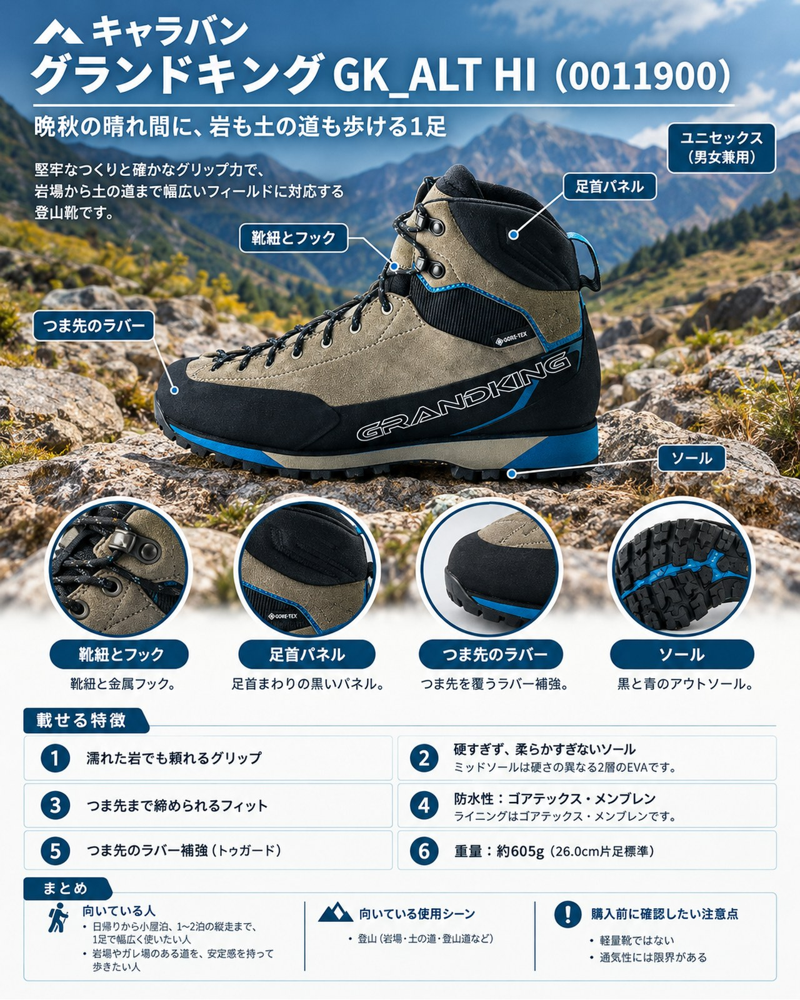

10月末、強い寒気が抜けたあとの晴れ間は、空気が澄んで稜線歩きが気持ちよい日です。一方で高い山では結氷や冠雪が進み、日没も早くなります。岩混じりの道から樹林帯の土の道まで、1日の中で足元が何度も変わるのがこの季節の山です。
導入：どんな人・どんな山行に向くか
10月末、強い寒気が抜けたあとの晴れ間は、空気が澄んで稜線歩きが気持ちよい日です。一方で高い山では結氷や冠雪が進み、日没も早くなります。岩混じりの道から樹林帯の土の道まで、1日の中で足元が何度も変わるのがこの季節の山です。
キャラバンの「GK_ALT HI」（品番 0011900）は、公式ページで「地形変化の連続こそが、その真価を示す場所。」とうたうハイカットのトレッキングシューズです。以前紹介した本革の「GK85」が重荷の縦走を支える“堅さ”の1足だとすれば、GK_ALT HIは岩場の安心感と歩きやすさの両立を狙った1足。無雪期の日帰りから小屋泊、1〜2泊の縦走まで、1足で幅広くこなしたい人に向いています。
基本スペック
| 項目 | 内容 |
|---|---|
| 商品名 | GK_ALT HI |
| 品番 | 0011900 |
| 価格 | 34,650円（税込、公式サイト表示） |
| 重量 | 約605g（26.0cm片足標準） |
| アッパー | 2.0〜2.2mmスエードレザー／合成皮革／メッシュポリエステル（ランドラバー補強） |
| ライニング | ゴアテックス・メンブレン |
| アウトソール | ヴィブラムPEPE |
| ミッドソール | EVA（硬度の異なる2層構造） |
| ワイズ | 3E（アドバンスラスト／スペシャルウェッジトゥ） |
| サイズ | 100グレー・131グラファイト：23.0〜29.0cm、30.0cm／688ミントブルー：23.0〜26.0cm |
| カラー | 100グレー、131グラファイト、688ミントブルー |
濡れた岩でも頼れるグリップ
アウトソールはヴィブラムのMEGA GRIPコンパウンドを使ったPEPEソールです。使った人の声では、急な岩の上でも「粘りつくように岩肌を捉えてくれる」とされ、濡れた岩で滑りにくい点とつま先のクライミングゾーンも挙げられています。朝の冷え込みで湿った岩が残る晩秋の稜線で、心強いポイントです。
硬すぎず、柔らかすぎないソール
ミッドソールは硬さの異なる2層のEVAです。一部の紹介では、前後を硬め、中央を柔らかめにして着地時の安定性を出しているとされています。ソールの硬さは、同社の「グランドキング GK88」より柔らかいという声もあります。岩場での支えを持ちながら、土の道では自然に歩ける設計です。
つま先まで締められるフィット
公式の説明では、外羽のレースアップ構造、足の骨格に合わせたヒールカップとアンクルサポートが挙げられています。使った人の声では、締め付けすぎないフィットと、つま先近くまで締められるシューレースによるホールド力が評価されています。付属のハーフインソールで微調整しやすい点にも触れられています。
冷たい雨や水たまりに備える防水性
ライニングはゴアテックス・メンブレンです。使った人の声では、足首あたりまで水に浸かっても浸水しなかった、雨の中での作業でも濡れが気にならなかったとされています。週の後半に再び雨が予想される時期にも安心です。
岩に擦れても傷みにくい
つま先にはラバー補強（トウガード）があります。使った人の声では、岩に擦りつけてもほぼ新品の状態を保ったとされています。
デメリット・注意点
- 軽量靴ではない：約605g（26.0cm片足）は、軽快なハイキングシューズより重めです。スピード重視ならミッドカットの「GK_ALT MID」のほうが有利とされています。
- 通気性には限界がある：レザーと樹脂で覆われたアッパーのため、通気性には限界があるという指摘があります。
- 長期の重荷縦走では一歩譲る：複数泊の重い荷物を背負う長期縦走では、より堅牢な重登山靴に一歩譲るとされています。
- 雪や凍結路向けではない：想定は無雪期の山行です。結氷・冠雪が進む高所や、凍結が予想されるルートでは、冬山用の靴や装備を検討しましょう。
- ミントブルーはサイズが限られる：688ミントブルーは23.0〜26.0cmのみの展開です。
向いている人・向いていない人
◎向いている人
- 日帰りから小屋泊、1〜2泊の縦走まで、1足で幅広く使いたい人
- 岩場やガレ場のある道を、安定感を持って歩きたい人
- GK85のような重登山靴は重すぎると感じる人
△向いていない人
- 軽さと通気性を最優先したい人
- 重い荷物を背負って何泊も歩く長期縦走が中心の人
- 積雪期や凍結した高所で使いたい人
まとめ
GK_ALT HIは、ヴィブラムPEPEソールのグリップと2層EVAミッドソールの安定感で、岩場と土の道の両方に対応するキャラバンのハイカットです。最軽量ではありませんが、フィットや防水性、耐久性の評価は高く、晩秋の晴れ間に無雪の稜線から樹林帯までを1足で歩きたい人に向いた選択肢です。日没が早い季節なので、行程には余裕を持って出かけましょう。
この記事で紹介した商品
価格・重量・在庫は各ブランド公式サイトの記載（確認日つき）にもとづきます。商品を押すと、購入先を選べます。
この記事にはアフィリエイト広告が含まれます。リンク先での購入により、当サイトが報酬を受け取る場合があります。山行の前には、最新の気象とルートの状況を必ずご確認ください。